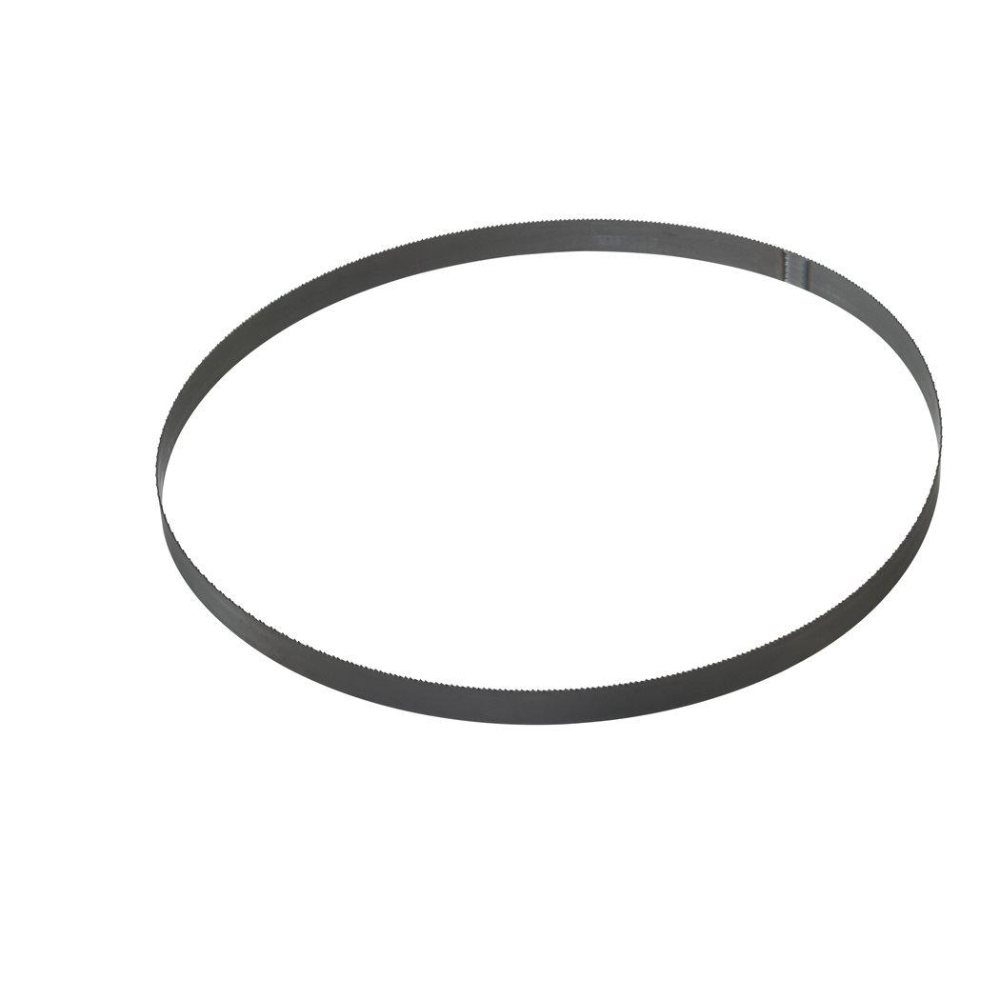

| Contents | 685..80mm length, 2.5 mm to 8 mm material wall thickness, 18 teeth per inch with 1.4 mm tooth pitch. |
| Material wall thickness (mm) | 2.5 - 8 |
| Materials suited for | Stainless steel|Cast Iron|Angle Iron|Galvanised Pipe |
| Pack quantity | 3 |
| Article Number | 48390572 |
| EAN | 045242272341 |